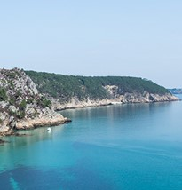
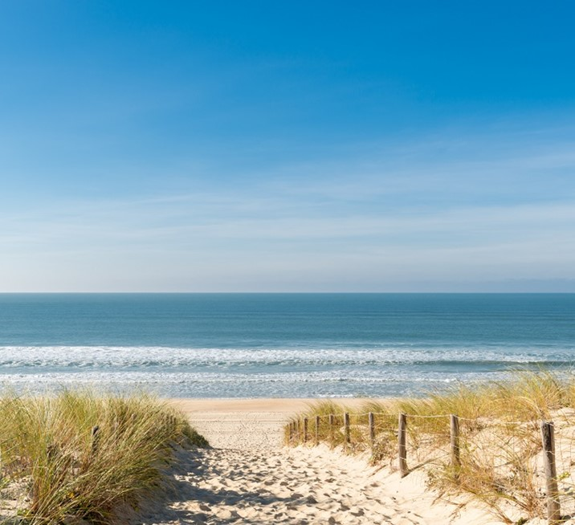
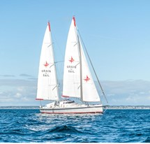

Coucou, je m'appelle Claire Soleille. J'ai 18 ans et je viens de Strasbourg, en Alsace. Je suis actuellement en première année du programme Grande Ecole à l'Université de Strasbourg IESEG, School of Management.
Découvrez l'IESEGJe suis passionnée de voyages. Depuis toute petite, j'ai eu la chance de voyager dans de nombreux pays et villes. Le sens du contact, les relations avec les étrangers me permettent de découvrir de nouvelles cultures, mentalités et de nouveaux paysages...
Dynamique et motivée, je suis très sportive. Toujours très active, le sport est une de mes passions. J'ai pratiqué douze ans de danse classique ainsi que de nombreux autres sports !
Tous les étés, depuis que je suis petite, je fais de la voile, du catamaran et du bateau, avec mes parents, mes cousins, mes amis et mes grands-parents. Entre stage de voile ou croisière, le bateau c'est une histoire de famille !
Après mes études à l'IESEG, j'aimerais travailler dans le commerce international à l'étranger. Cela rejoint ma passion des voyages. Découvrir de nouvelles cultures, de nouvelles langues, d'autres mentalités et de nouveaux paysages. Ainsi, je souhaite lier à la fois voyage et vie professionnelle.
  